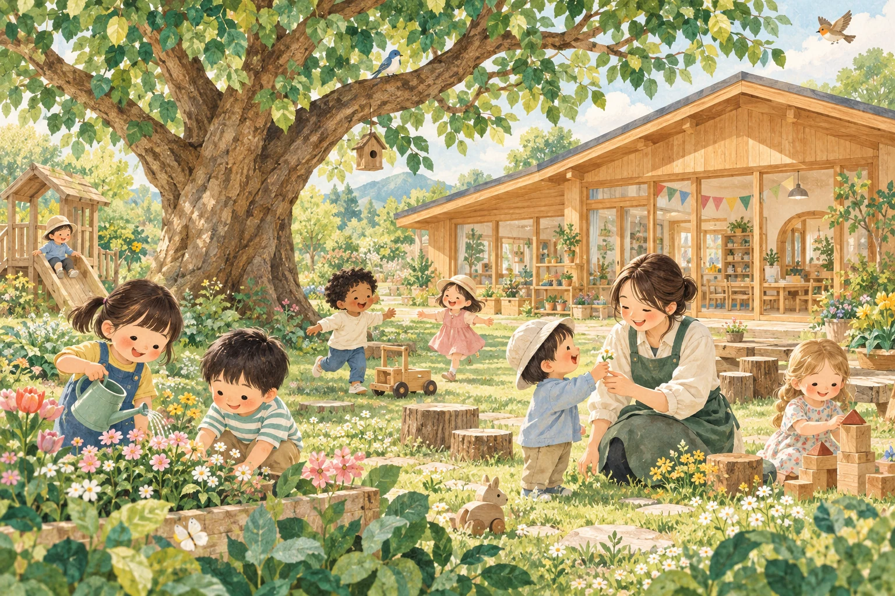

Nature
01 — 自然とふれあう
季節が、いちばんの先生。
土のにおい、葉っぱのかたち、風の音。五感でふれる体験が、好奇心の芽を育てます。
自然と、音楽と、きみらしさ。
泥んこになって、音にときめいて。
夢中になれる毎日が、子どもの根っこを育てる。
一人ひとりの「やってみたい」を大切にする保育園です。

架空の保育園を舞台にしたサービスデモです。
OUR PHILOSOPHY
大人が答えを教えるよりも、
子どもが自分で見つけるよろこびを。
小さな発見に寄り添い、豊かな心を育みます。
土のにおい、葉っぱのかたち、風の音。五感でふれる体験が、好奇心の芽を育てます。
うたって、鳴らして、リズムにのって。言葉になる前の気持ちも、自由に表現します。
選んで、考えて、もういちど。一人ひとりのペースで、夢中になれるあそびを見つけます。
A DAY AT NIJINONE
よくあそび、よく食べ、よく眠る。
安心できるリズムのなかで、自分らしく。
たっぷりの安心のなかで、はじめてに出会う。
掲載内容はデモ用の一例です。活動は年齢やその日の様子に合わせます。
こんなホームページを、あなたの施設にも。
02 問い合わせ自動チャットボット
家事がひと段落した夜も、通勤の合間も。
保護者の疑問に答えて、見学への一歩を後押しします。
よくある質問に、その場で。開園時間や持ち物などを、園の登録情報からご案内。
会話から、次の行動へ。見学方法を確認したら、そのまま案内画面へ。
先生は、必要な対応に集中。個別の相談は職員へ。繰り返しのご案内をサポート。
保護者になったつもりで、聞いてみてください。質問ボタンも、文字入力も使えます。
チャット体験を読み込んでいます。
ページ内は回答例を使った体験サンプルです。実際のAIとの会話は上記の外部デモからお試しください。
03 職員向け・社内bot
「この手順、どこに書いてあったっけ？」
マニュアルを行き来する代わりに、まずひと言。
必要な手順と、確認すべき資料が見つかります。
「欠席連絡の手順は？」と質問して、回答の参照資料も開いてみてください。
職員向けのチャット体験を読み込んでいます。
答えだけでなく、もとの資料も確かめられる。
この体験は架空のマニュアルを使用しています。実際の導入時は、社内専用の利用範囲・認証を設計します。MEET NIJINONE
園の雰囲気を知って、気になることを聞いたら、次は見学へ。
ホームページとbotをつなぐ、自然な導線も体験できます。
ABOUT THIS DEMO
はい。ホームページ制作、既存サイトへの問い合わせbot追加、社内botの導入など、必要なところから相談できます。施設の状況やご希望に合わせて構成をご提案します。
問い合わせbotは、保護者など施設の外の方に公開情報をご案内します。社内botは、職員が業務ルールや手順を調べるためのものです。参照する資料と利用者の範囲を分けて設計します。
ページ内のチャットは、登録済みの回答例を表示する体験サンプルです。入力をAIへ送信する機能はありません。自由な質問への回答は「実際のAIデモ」のリンク先で体験できます。見学申し込みも体験専用です。
園のパンフレット、よくある質問、料金表、職員用マニュアルなど、いまお使いの資料が出発点です。資料がまとまっていなくても、ヒアリングを通じて一緒に整理します。費用はご希望の範囲を確認してご案内します。
MADE FOR YOUR EVERYDAY
施設の魅力を届けるホームページ。
保護者と職員、それぞれを支えるbot。
Growvia for kizzが、必要なところから一緒につくります。